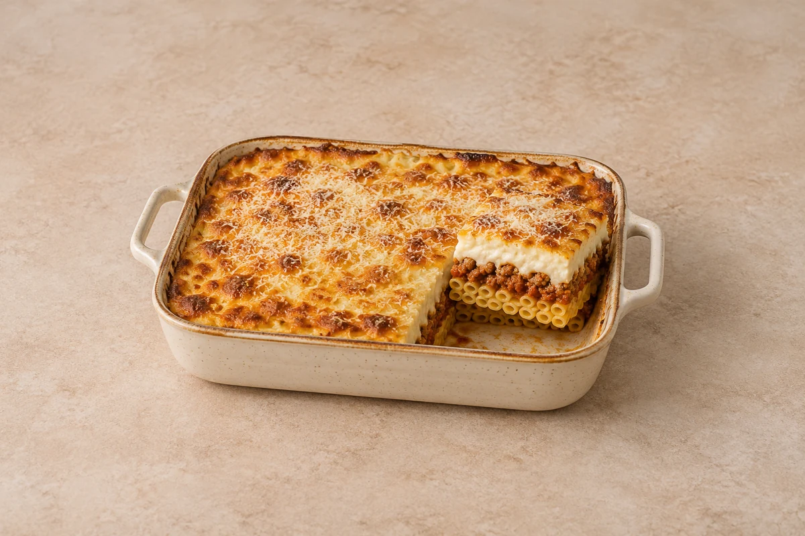

Bakes
Greek Beef Pastitsio
Cinnamon-spiced beef and pasta topped with a thick, golden Parmesan béchamel. Serves 2.
Time to allow: 1 hr 20 min total
Prep25 mins
CookAbout 55 mins
people
Ingredient quantities update automatically

Ingredients
Pasta and beef
Béchamel
Method
Make the beef sauce
Heat the oil in a deep frying pan. Cook the onion over a medium heat for 5 minutes, then add the mince and brown for 5–6 minutes, breaking it up. Add the garlic and cook for 1 minute. Stir in the tomato purée, cinnamon and oregano.Reduce the sauce
Pour in the wine or stock and simmer for 2 minutes. Add the tomatoes and simmer uncovered for 15–20 minutes until thick, stirring occasionally. Taste and season.Cook the pasta
Heat the oven to 200°C / 180°C fan / gas 6. Cook the pasta in salted water until 2 minutes short of the packet time. Drain and spread in an approximately 20cm baking dish for 2 servings. Spoon the thick beef sauce over the pasta.Make the béchamel
Melt the butter in a saucepan. Stir in the flour and cook for 1 minute. Gradually whisk in the milk, then simmer gently for 3–4 minutes until thick and smooth. Remove from the heat, stir in two-thirds of the Parmesan and the nutmeg, and let cool for 5 minutes.Top the bake
Whisk the beaten egg into the slightly cooled béchamel. Spread over the beef and scatter with the remaining Parmesan. When scaling up, use a larger dish or several dishes to keep similar layer depths.Bake and rest
Bake for 25–30 minutes until golden and piping hot throughout. Let stand for 10 minutes before cutting into portions.
Tips & leftovers
Storage & leftovers
Cool in shallow portions and refrigerate covered within 2 hours. Eat within 48 hours.
Freezing
Freeze cooled individual portions, tightly wrapped, for up to 2 months for best quality. Defrost fully in the fridge. Cool and slice into portions before wrapping for easier thawing.
Reheating
Reheat once in an oven at 180°C / 160°C fan until steaming hot in the centre. Cover if the top browns before the middle is hot; portion size affects the time. The dense pasta layers need time to heat in the middle; cover the top if needed.
Substitutions
Use rigatoni or penne as written. Beef stock can replace red wine. Lamb mince gives a different but suitable variation; cook it fully before layering.
Keeping leftovers safe
Cool cooked leftovers in small portions and refrigerate within 2 hours. Keep the fridge at 0–5°C and the freezer around −18°C. Freeze suitable leftovers promptly. Defrost fully in the fridge and use within 24 hours. Reheat only once, until steaming hot all the way through. Follow any shorter use-by or opened-pack instructions; using older cooked ingredients does not restart their storage time.
Food-safety guidance: Food Standards Agency: chilling and freezing · reheating leftovers.